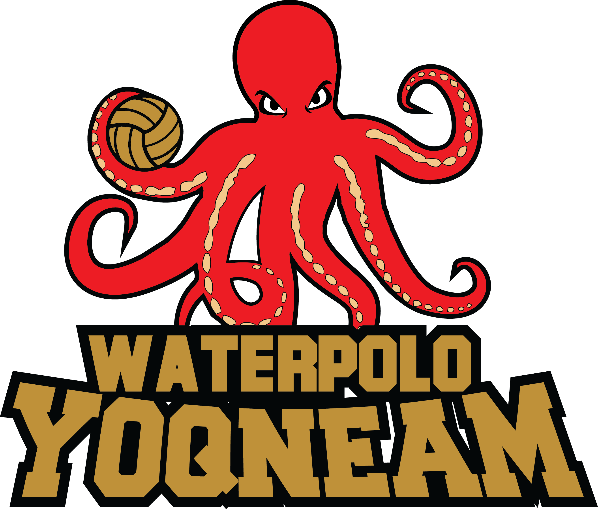

<nav class="navbar " dir="rtl" >
  <div class="container-fluid">
    <!-- Brand and toggle get grouped for better mobile display -->
    <div class="navbar-header">
      <button type="button" class="navbar-toggle collapsed" data-toggle="collapse"
              data-target="#bs-example-navbar-collapse-1" aria-expanded="false">
        <span class="sr-only">Toggle navigation</span>
        <span class="icon-bar"></span>
        <span class="icon-bar"></span>
        <span class="icon-bar"></span>
      </button>
      <a class="navbar-brand" href="#"></a>
    </div>

    <!-- Collect the nav links, forms, and other content for toggling -->
    <div class="navbar-inner"  >
      <div class="collapse navbar-collapse" id="bs-example-navbar-collapse-1">
        <ul class="nav navbar-nav active_nav_link divider-vertical">
          <li routerLinkActive="active" [routerLinkActiveOptions]="{exact:true}"><a [routerLink]="['/']">בית <span class="sr-only">(current)</span></a></li>
          <li routerLinkActive="active" [routerLinkActiveOptions]="{exact:true}"><a [routerLink]="['/about']">עלינו</a></li>
          <li routerLinkActive="active"><a href="#">משחקים</a></li>
          <li routerLinkActive="active"><a href="#">חדשות</a></li>
          <li routerLinkActive="active"><a href="#">צור קשר</a></li>

        </ul>

      </div><!-- /.navbar-collapse -->
    </div>
  </div><!-- /.container-fluid -->
</nav>

